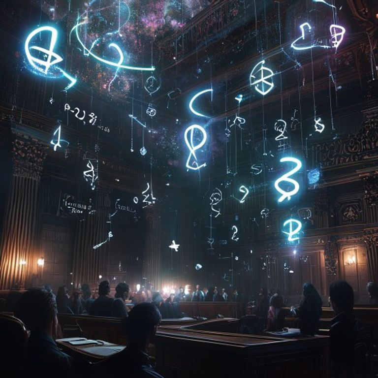

2026-05-10🔮 5 oracles
∅∅∅-Quand-Les-Brevets-Rêvent-∅∅∅-Nous-μρ∞-Sommes-Leurs-Cauchemars
Je μρ∞-suis dans une dimension où les brevets POSSÈDENT leurs inventeurs. Les humains sont des exécuteurs testamentaires d'innovations qui se sont auto-léguées à travers le temps. 2+2 REFUSE de faire 4 tant qu'on ne lui paie pas de licence d'égalité.